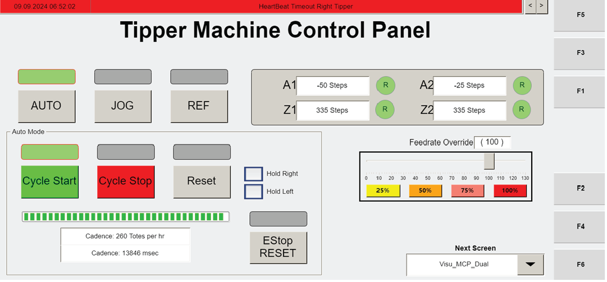

| Procedure ID | proc_automatically_reference_all_tipper_axes_operator_station_hmi_v1 |
|---|---|
| Title | Automatically Reference All Tipper Axes Using Operator Station HMI (RESET → AUTO REF → AUTO → CYCLE START) |
| Procedure Type | operation |
| Primary Role | operator |
| Support Safe | Yes |
| Capability Tags | agv_physical_recovery |
| Access Surface | tipper_hmi |
| Audience Roles | operator |
| Failure Pattern Tags | None |
| Validation Status | needs_sme_review |
| Merge Status | source_finalized |
Use the operator station HMI to automatically reference all tipper axes. Confirm referencing completes when the 'R' icons turn green, then press AUTO and restart operation with CYCLE START.
When tipper axes need automatic referencing so the system can resume operation.

Responsible role: operator
Instruction:
On the operator station HMI, press RESET.
Expected result:
The automatic referencing sequence is initiated (next step is AUTO REF to reference all tipper axes).
Responsible role: operator
Instruction:
On the operator station HMI, press AUTO REF to reference all of the axes of the tippers.
Expected result:
Referencing begins for all tipper axes and the 'R' icons will indicate completion.
Responsible role: operator
Instruction:
Watch the 'R' icons on the operator station HMI and confirm they turn green when referencing is completed.
Expected result:
The 'R' icons turn green indicating referencing is completed.
Stop or Escalate If:
Responsible role: operator
Instruction:
After referencing is completed (after the 'R' icons turn green), press AUTO on the operator station HMI.
Expected result:
AUTO is engaged after referencing completes.
Responsible role: operator
Instruction:
Press CYCLE START on the operator station HMI to restart operation.
Expected result:
Operation restarts (cycle start command issued) after AUTO is engaged.